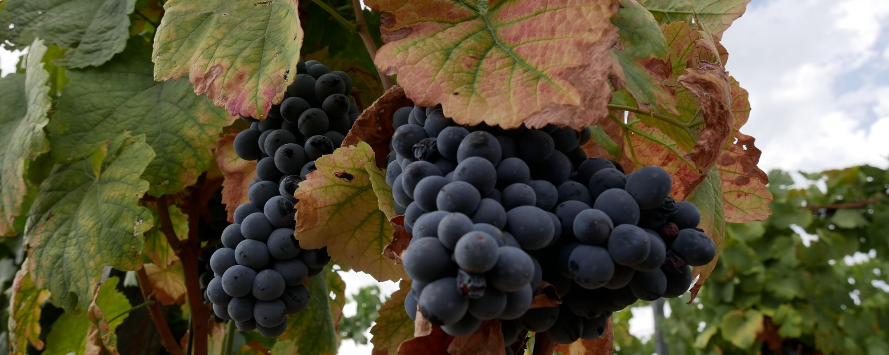
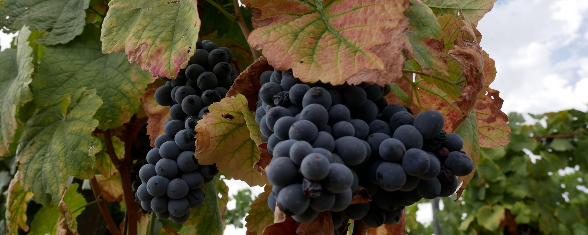
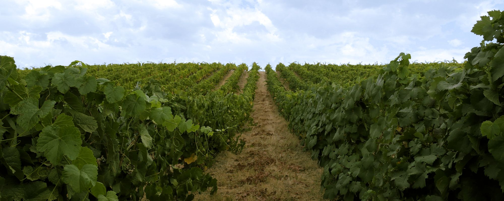
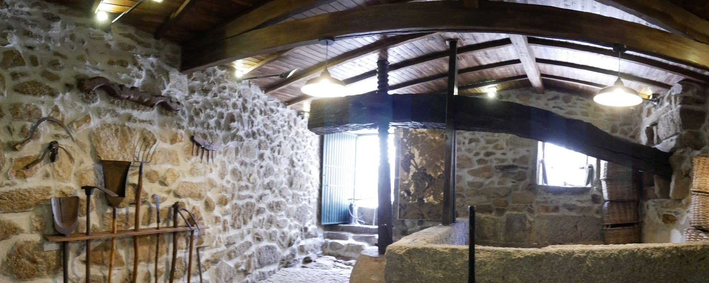
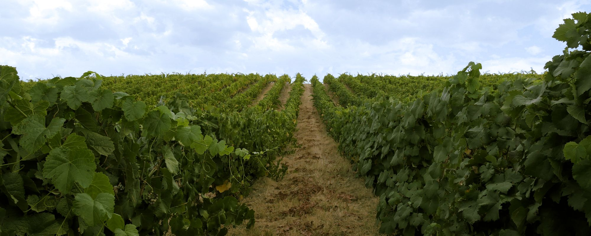
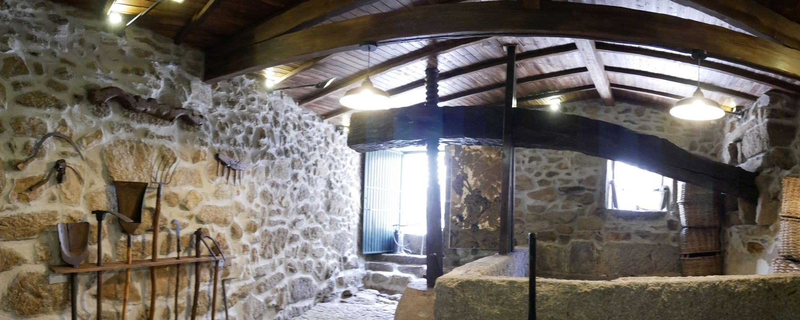

Situado junto ao centro histórico de Freixo de Numão, o Lagar do Avô é um pequeno núcleo museológico de matriz familiar que reúne alguns utensílios e alfaias agrícolas usadas na viticultura e na vinificação.
De construção rústica, adjacente à própria habitação, edificado com paredes espessas e resistentes de granito e desprovido de vãos para além da porta de acesso, apresenta no interior dois níveis.
Um, superior, constituído por grandes monólitos solidamente amarrados e até chumbados para não verterem o sumo das uvas aí espremido. Outro, inferior, onde gira um peso grande, em pedra, que tem encastrado um fuso roscado de madeira que atravessa uma vara também de madeira que, na horizontal, cobre o lagar. A rotação manual do peso movimenta a vara que esmaga as uvas, fazendo escoar o vinho, por uma bica, para uma lagareta de pedra de onde se trasfega para os tonéis.
De carácter permanente, a pequena exposição procura, através dos objetos etnográficos expostos e do seu próprio espaço, preservar a memória local e dar a conhecer os métodos e técnicas tradicionais do cultivo da vinha e da produção de vinho.

 

 


